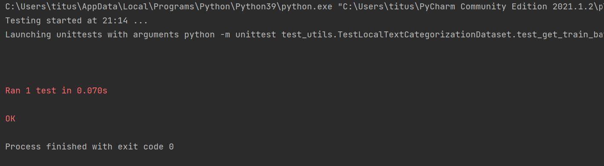

From Poc To Prod
The From Poc to Prod project is a big step in a more professional way of working. Until now, most of the time we have learnt to develop code using Python Notebooks so that we could have a step-by-step study on our code performances. For this project I am using the unittest library to test my python files, calling our code in testing files with a chosen environment configured in a yaml file.
We are here producing a Deep Learning Model which is supposed to make predictions.
This is our environment file where we can configure the libraries and dependencies desired in our production environment.
The first part of our project is to preprocess our data. The test_utils.py file will test the utils.py file.
This function has been coded to get the current train batch, it is located in the utils.py file.
What is a batch ?
Think of a batch as a for-loop iterating over one or more samples and making predictions. At the end of the batch, the
predictions are compared to the expected output variables and an error is calculated. From this error, the update
algorithm is used to improve the model.
This is a test function located in the test_utils.py file. We can run the test function alone as a debugger, or we can run the entire file composed of multiple tests. Then, the logs will return an answer "OK" if the test is passed, or an error with specifications if not. In those test functions we are mocking chosen values to assert with our code result.
I will probably start again this project to improve my cloud functions and then pursue it till the creation of a Business Intelligence tool, but it is quite enough for a first familiarization with this new technology.
Running a test function alone :
Running the entire test file :
At this point, all the preprocessing phase has passed the unittest successfully. So, we can be sure that the preprocessing part can be sent in production. Now, we can move to the unittest of the train phase to test if the model is well running. Then, the predict phase will be our final asset, after being sure that our model is working, but it is a non-sense to apply unittest on a prediction as it is a different prediction every time we run it.